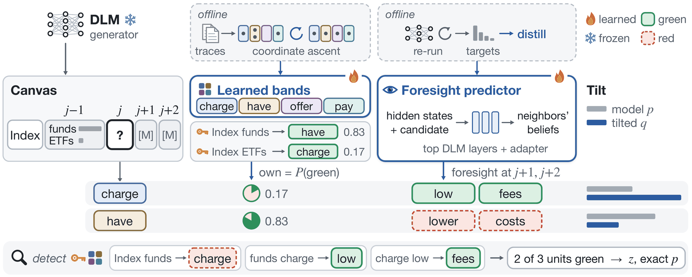
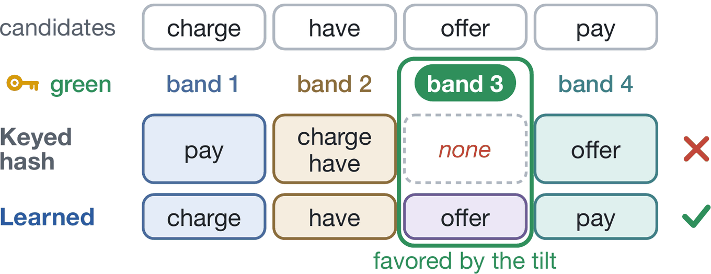
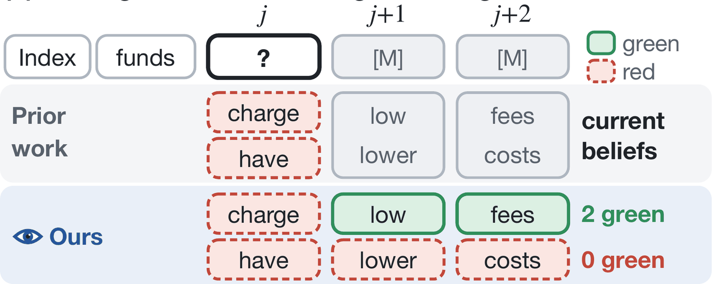
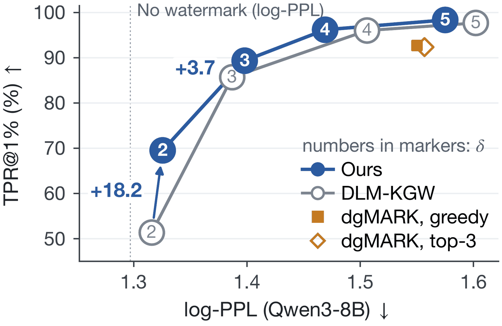
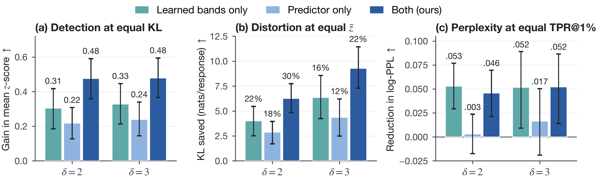
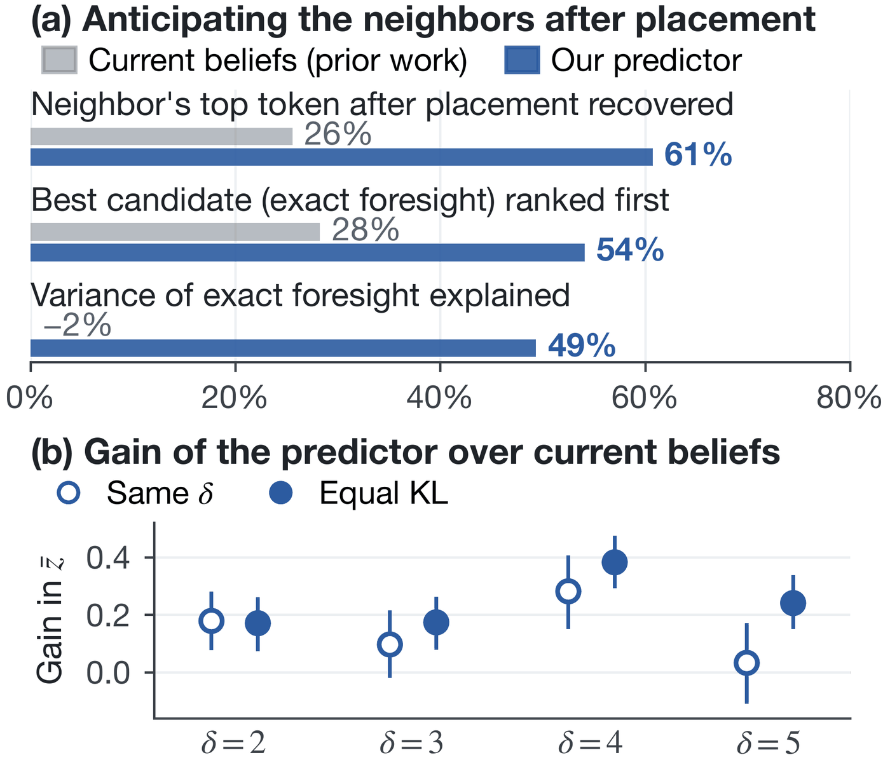

Abstract
Green-red watermarks favor tokens from a green list that a secret key derives from the preceding tokens. Diffusion language models, however, often choose a token before its preceding tokens, and the token later shapes its neighbors' green lists. Prior work therefore tilts each choice to raise the expected number of green tokens at its own and its neighbors' positions. Building on this objective, we first learn two components that prior work keeps fixed: vocabulary bands that serve as green lists, separate competing candidates and keep the null distribution exact, and a foresight predictor that estimates how each candidate shifts its neighbors' predictions. Second, we count green tokens as the detector does, once per distinct context-token pair, so repetition earns nothing. On WaterBench with LLaDA-8B-Instruct, each learned component raises the z-score at equal distortion, and their gains are nearly additive. With a strong watermark, ours detects at least 96% of responses at a 1% false-positive rate while matching the LLM-judge score of unwatermarked text. Ours also detects more responses on Dream and as many or more on code and question answering without a significant loss in task accuracy.
A token is chosen before its context exists
In green-red watermarks, a secret key and the preceding tokens select a green list at each position, the generator favors green tokens, and a detector that knows the key tests whether a text contains more green tokens than chance would give. This design relies on two conditions that autoregressive generation guarantees. When a token is sampled, the tokens that select its green list are already fixed, and the tokens whose green lists it helps select do not exist yet.
Diffusion language models such as LLaDA and Dream break both conditions. They generate a response by iteratively unmasking a canvas of mask tokens, and they commit tokens in an order that is not strictly left to right. In the default order of LLaDA-8B-Instruct, 39% of the tokens are committed while part of their context is still masked, and 37% after one of the next two tokens, whose context they are part of.
The first twelve tokens of the response above, numbered by the step at which they are committed. Highlighted tokens are committed before a token to their left.
A watermark must therefore choose a token before its green list is known, and this choice also shapes the green lists of its neighbors. DLM-KGW (Gloaguen et al., 2026) handles both cases with the model's beliefs about the masked positions. It maximizes the expected share of green tokens under a KL constraint, so it favors a candidate that is likely to be green and one that makes its neighbors green.
Each commit maximizes the evidence the detector counts
We build on this optimization view but maximize the expected evidence of the statistic that the detector actually computes, the number of distinct green units. Committing a candidate v at position j affects that count in two ways. The unit at j may be green, and v enters the contexts of the units at j+1 and j+2, its dependents. Relative to the null rate γ, a candidate's expected contribution is
where g0(v) is the probability that v is green given the beliefs about its context, and gt(v) the probability that the dependent j+t becomes green once v is placed. The weight λ = ½ lets the two dependents together weigh as much as the position itself, since they are tilted again when they are committed. The distribution that maximizes the expected score under a KL penalty tilts the model's distribution p:
A unit that already occurs in the committed text adds no evidence, so this unit-aware score sets its green probability to γ, and repetition earns nothing. The tilt of DLM-KGW omits this correction and keeps rewarding repeated green units. Under this objective, the evidence that a commit can gain at a given distortion depends on two components that existing green-red DLM watermarks keep fixed, the partition of the vocabulary and the beliefs from which foresight is computed.

Learned bands spread competing candidates

Learned bands decouple the partition, which we learn, from the key, which only selects the green band. A partition assigns every token to one of four bands, and a keyed hash of the context selects one band as the green list (γ = 0.25, as in DLM-KGW). Because the key still picks the green band, the number of green units in any text that does not depend on the key has a known distribution for every partition, and the detector's p-value stays exact.
The partition still determines how much the tilt can gain. A band that holds almost all of the probability, or almost none, gains little when it is green, so the tilt gains the most on average over keys when every band holds a likely candidate. We therefore learn the partition that maximizes this gain over the commits of unwatermarked decoding traces of training prompts, by coordinate ascent over tokens.
The predictor sees the neighbors after placement

Foresight needs the neighbors' beliefs once v is placed. Existing methods use the beliefs before placement, which are the same for every candidate, although placing a candidate changes the most likely token of a masked neighbor in 74% of uncertain commits, or decision states. Computing the post-placement beliefs exactly costs one generator pass per candidate.
Real decision states of LLaDA-8B-Instruct (training prompts, low-confidence order), with the top two beliefs about the two masked neighbors before placement and after placing each of the two most likely candidates. Before placement, the belief is one distribution for all candidates, often a mixture of their continuations. After placement, each candidate determines a different, usually sharper prediction.
The foresight predictor estimates these beliefs instead. Like the draft heads of speculative decoding, it reads the generator's hidden states. An adapter rewrites the state at j to encode v, and fine-tuned copies of the generator's top layers process a window around j with and without the rewrite. Their difference, added to the generator's final states and read through its output layer, gives the post-placement beliefs, and all candidates of a commit share one batched pass. We distill the predictor from the generator's own post-placement predictions at decision states of training prompts.
Results
We compare with the two DLM watermarks whose official code runs in this setting, DLM-KGW in its main configuration and dgMARK, which watermarks the decoding order instead of the tokens. TPRs use thresholds calibrated on 600 unwatermarked responses re-detected under 100 keys, log-perplexity is measured under Qwen3-8B, and the judge, Gemma-4-12B-it, rates style and consistency from 1 to 10.
| TPR (%) ↑ | log-PPL | Judge | Rep. (%) | |||
|---|---|---|---|---|---|---|
| Method | δ | @1% | @0.1% | ↓ | ↑ | ↓ |
| No watermark | – | – | – | 1.297 | 9.12 | 19.3 |
| dgMARK, greedy | – | 92.7 | 84.2 | 1.550 | 9.07 | 16.2 |
| dgMARK, top-3 | – | 92.3 | 84.3 | 1.557 | 9.12 | 15.2 |
| DLM-KGW | 2 | 51.3 | 24.8 | 1.316 | 9.13 | 19.3 |
| Ours | 2 | 69.5 | 44.0 | 1.326 | 9.29 | 18.2 |
| DLM-KGW | 3 | 85.7 | 70.0 | 1.387 | 8.97 | 23.3 |
| Ours | 3 | 89.3 | 79.3 | 1.398 | 9.30 | 14.0 |
| DLM-KGW | 4 | 96.0 | 91.3 | 1.506 | 8.62 | 26.3 |
| Ours | 4 | 96.2 | 92.7 | 1.469 | 9.32 | 14.3 |
| DLM-KGW | 5 | 97.7 | 95.3 | 1.602 | 8.15 | 30.5 |
| Ours | 5 | 98.3 | 96.0 | 1.575 | 9.26 | 12.2 |
WaterBench-600 with LLaDA-8B-Instruct. Rep. is the share of responses with a repetition loop, in which over 15% of the word 4-grams repeat an earlier one. Bold marks the better of DLM-KGW and ours at the same δ.
At low strengths, ours detects more at the same log-perplexity
Low strengths cost the least quality but leave detection uncertain, so extra evidence matters most there. Averaged over five keys on 300 prompts, ours detects 12.7 and 4.5 points more responses than DLM-KGW at 1% FPR at δ = 2 and 3, and 11.9 and 10.3 points more at 0.1% FPR, all significantly, with no significant difference in log-perplexity.

Where both detect almost every response, ours keeps the quality of text without a watermark
At δ = 4 and 5, the judge rates ours 9.32 and 9.26, at least as high as text without a watermark (9.12), against 8.62 and 8.15 for DLM-KGW, and a second judge agrees. Most of the gap is explained by repetition loops. The tilt of DLM-KGW keeps rewarding repeated green units, although both detectors count each unit once, and its share of looping responses grows from 19 to 31% with δ, while ours stays between 12 and 18%. Removing our unit-aware score confirms the cause, as ours then loops in 21% of its responses instead of 14% at δ = 3 and 4.
The two components add up
Crossing the partition (keyed hash or learned bands) with the beliefs behind foresight (current or predicted) under the same objective isolates each component. Learned bands raise the mean z-score by 0.41–0.47 at every strength without raising log-perplexity, and the predictor raises it by 0.10–0.28 with either partition. Their gains are close to additive. Together, they detect 20.5 and 4.8 points more responses at 1% FPR at δ = 2 and 3, with no significant change in log-perplexity or judge score, and need 30% and 22% less KL for the same mean z-score.

Why post-placement beliefs matter
On 2,397 held-out decision states, foresight from the current beliefs is only weakly correlated with exact foresight (0.39) and explains none of its variance. The predictor recovers each neighbor's post-placement top-1 token in 61% of the cases, explains 49% of the variance, and ranks the exact best candidate first in 54% of the states, against 28% for the current beliefs. It costs 1.49 times the decoding time of current beliefs, against at least 2.15 times for exact foresight, which re-runs the generator for each candidate.

Another model, other tasks, and edits
| Learned for | Unseen | |||
|---|---|---|---|---|
| δ = 4 | MBPP | MMLU-Pro | HumanEval | GPQA-D |
| TPR@1% (%) ↑ | ||||
| DLM-KGW | 15.0 | 60.0 | 17.7 | 72.2 |
| Ours | 22.5 | 65.0 | 17.7 | 72.2 |
| Pass@1 or accuracy (%) ↑ | ||||
| No watermark | 37.0 | 40.0 | 35.4 | 20.7 |
| DLM-KGW | 32.5 | 35.0 | 34.8 | 26.8 |
| Ours | 36.5 | 35.7 | 33.5 | 29.3 |
Code and QA with LLaDA-8B-Instruct, both components learned on training problems from MBPP, MMLU-Pro and GSM8K, none from HumanEval or GPQA-Diamond (chance 25%).
| Dream-v0-Instruct-7B | δ | TPR@1% ↑ | Valid (%) ↑ | log-PPL ↓ |
|---|---|---|---|---|
| No watermark | – | – | 62.8 | 2.188 |
| DLM-KGW | 3 | 42.0 | 53.8 | 2.505 |
| Ours, transferred | 3 | 57.3 | 78.2 | 2.290 |
| Ours, learned | 3 | 60.0 | 81.3 | 2.278 |
| DLM-KGW | 4 | 56.5 | 54.3 | 2.631 |
| Ours, transferred | 4 | 75.5 | 80.3 | 2.353 |
| Ours, learned | 4 | 78.3 | 84.2 | 2.316 |
Dream on WaterBench-600 (official random order), nominal TPR@1%. Transferred: LLaDA's partition with current beliefs. Learned: both components learned for Dream. Log-perplexity over valid responses.
Code and question answering. Learned on code and QA training prompts, ours detects 7.5 points more programs than DLM-KGW (significantly) and 5.0 points more answers, and as many on HumanEval and GPQA-Diamond, which have no training prompts, while its pass@1 and accuracy do not fall significantly below those without a watermark.
Dream. LLaDA's partition, transferred through identical tokens, already detects 57.3% and 75.5% of the responses at δ = 3 and 4, against 42.0% and 56.5% for DLM-KGW. Most of this gap comes from response length, as 44% of the DLM-KGW responses at δ = 4 are too short to carry a signal, against 13% of ours, which treats special tokens as red.
Edits. Under 20% random deletions or insertions, ours detects about as many responses as DLM-KGW, and its AUC stays above 96% under every token edit. Under 20% substitutions it detects 6.7 points fewer, the price of two-token contexts. After paraphrasing, both token-level watermarks keep an AUC of 67–75%, against 52–58% for dgMARK.
Citation
@misc{kim2026watermarking,
title = {Watermarking Diffusion Language Models with Learned Foresight and Balanced Bands},
author = {Kim, Hyojun and An, Hyeseon and Han, Yo-Sub},
year = {2026},
eprint = {XXXX.XXXXX},
archivePrefix = {arXiv},
primaryClass = {cs.CL}
}